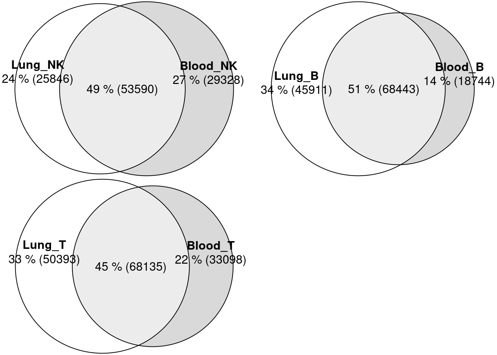
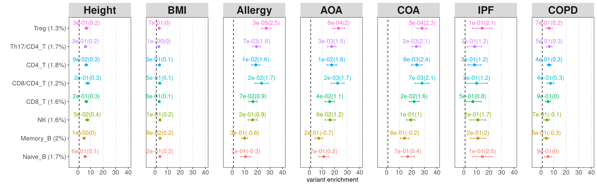
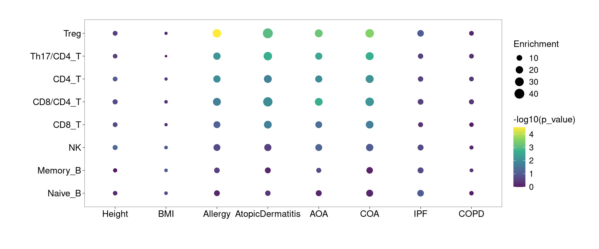
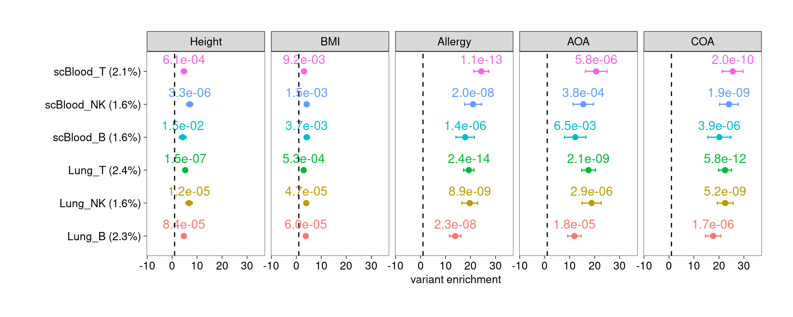
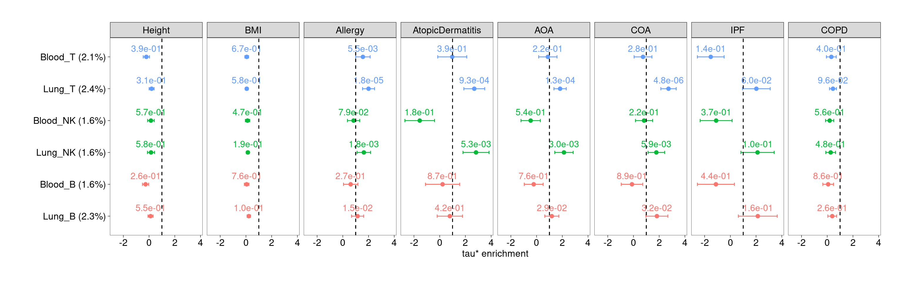
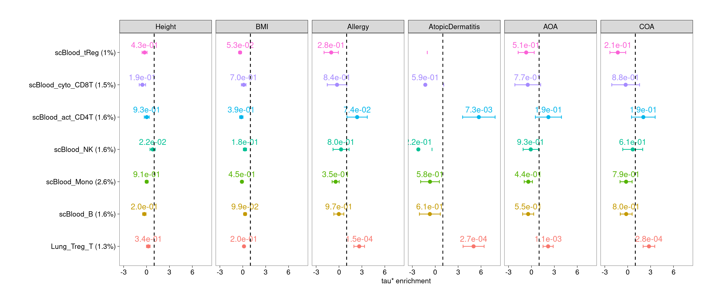
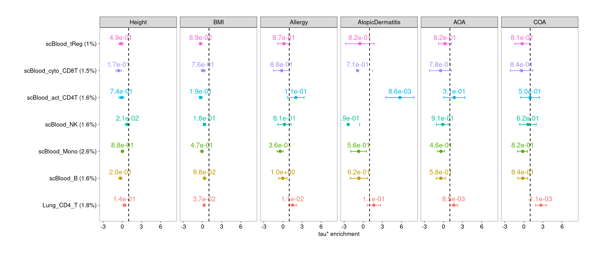
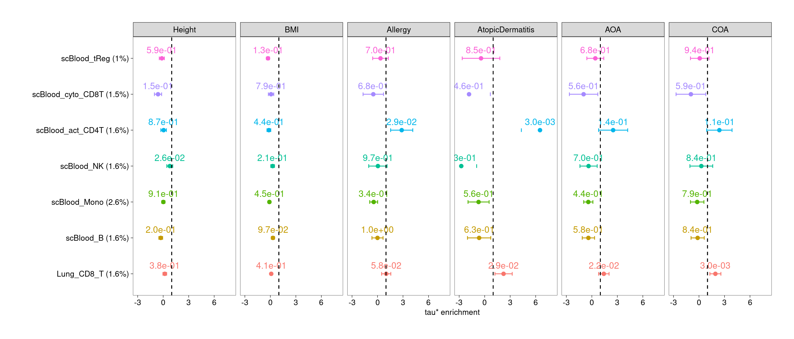
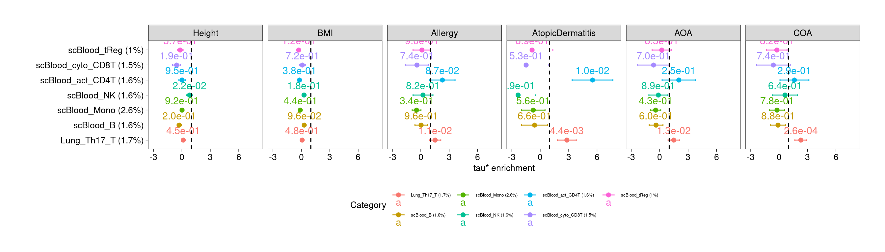

Last updated: 2025-05-22
Checks: 7 0
Knit directory: Lung_scMultiomics_paper/
This reproducible R Markdown analysis was created with workflowr (version 1.7.1). The Checks tab describes the reproducibility checks that were applied when the results were created. The Past versions tab lists the development history.
Great! Since the R Markdown file has been committed to the Git repository, you know the exact version of the code that produced these results.
Great job! The global environment was empty. Objects defined in the global environment can affect the analysis in your R Markdown file in unknown ways. For reproduciblity it’s best to always run the code in an empty environment.
The command set.seed(20250512) was run prior to running
the code in the R Markdown file. Setting a seed ensures that any results
that rely on randomness, e.g. subsampling or permutations, are
reproducible.
Great job! Recording the operating system, R version, and package versions is critical for reproducibility.
Nice! There were no cached chunks for this analysis, so you can be confident that you successfully produced the results during this run.
Great job! Using relative paths to the files within your workflowr project makes it easier to run your code on other machines.
Great! You are using Git for version control. Tracking code development and connecting the code version to the results is critical for reproducibility.
The results in this page were generated with repository version 2575a8a. See the Past versions tab to see a history of the changes made to the R Markdown and HTML files.
Note that you need to be careful to ensure that all relevant files for
the analysis have been committed to Git prior to generating the results
(you can use wflow_publish or
wflow_git_commit). workflowr only checks the R Markdown
file, but you know if there are other scripts or data files that it
depends on. Below is the status of the Git repository when the results
were generated:
Untracked files:
Untracked: ArchRLogs/
Untracked: Lung_scMultiomics_paper.Rproj
Untracked: _workflowr.yml
Untracked: analysis/ArchRLogs/
Untracked: analysis/about.knit.md
Untracked: analysis/archive.Rmd
Untracked: analysis/figures_for_grant_application.Rmd
Untracked: analysis/link_peaks_to_genes.Rmd
Untracked: code/run_GO_enrichment.R
Untracked: data/p2g_res/
Untracked: output/u19_multiomics
Unstaged changes:
Modified: README.md
Modified: analysis/identify_cell_types.Rmd
Modified: analysis/identify_lung_specific_transcriptomic_features.Rmd
Modified: analysis/index.Rmd
Modified: analysis/test.Rmd
Note that any generated files, e.g. HTML, png, CSS, etc., are not included in this status report because it is ok for generated content to have uncommitted changes.
These are the previous versions of the repository in which changes were
made to the R Markdown
(analysis/heritability_enrichment_for_lung_open_chromatin.Rmd)
and HTML
(docs/heritability_enrichment_for_lung_open_chromatin.html)
files. If you’ve configured a remote Git repository (see
?wflow_git_remote), click on the hyperlinks in the table
below to view the files as they were in that past version.
| File | Version | Author | Date | Message |
|---|---|---|---|---|
| Rmd | 2575a8a | Jing Gu | 2025-05-22 | figure for h2g enrichment |
| html | 9b45ce0 | Jing Gu | 2025-05-22 | Build site. |
| Rmd | 25b622a | Jing Gu | 2025-05-22 | figure for h2g enrichment |
Lung and Blood peaks were called by different procedures. Lung peaks have fixed size (500bp), while blood peaks have sizes ranging from 200 to 5K bp. To make comparison, I first made a union set of peaks and then comparing peaks from each tissue against the union set.

| Version | Author | Date |
|---|---|---|
| 9b45ce0 | Jing Gu | 2025-05-22 |

| Version | Author | Date |
|---|---|---|
| 9b45ce0 | Jing Gu | 2025-05-22 |
Bubble plot

| Version | Author | Date |
|---|---|---|
| 9b45ce0 | Jing Gu | 2025-05-22 |
For individual test, the quantity of heritability enrichment is used to demonstrate overall contribution of each annotation. We can use p-values for cell-type specific coefficients to compare their contributions across cell types.
Legends:
All lung and spleen lymphocytes show significant enrichment for genetic risks of asthma and related diseases, but not for BMI and height. B cells are less significant than T and NK cells.

| Version | Author | Date |
|---|---|---|
| 9b45ce0 | Jing Gu | 2025-05-22 |
Compared with blood, open chromatin regions of lung T cells are significantly enriched for genetic risks of allergy, atopic dermatitis, and asthma, but not for control traits as well as IPF and COPD. Lung NK cells also show moderate enrichment.

| Version | Author | Date |
|---|---|---|
| 9b45ce0 | Jing Gu | 2025-05-22 |
$RegTWarning: Removed 1 row containing missing values or values outside the scale range
(`geom_text()`).Warning: Removed 1 row containing missing values or values outside the scale range
(`geom_point()`).
| Version | Author | Date |
|---|---|---|
| 9b45ce0 | Jing Gu | 2025-05-22 |
$CD4T
| Version | Author | Date |
|---|---|---|
| 9b45ce0 | Jing Gu | 2025-05-22 |
$CD8T
| Version | Author | Date |
|---|---|---|
| 9b45ce0 | Jing Gu | 2025-05-22 |
$Th17
| Version | Author | Date |
|---|---|---|
| 9b45ce0 | Jing Gu | 2025-05-22 |
Differential CA peaks from MAST
We check differential CA peaks aggregated from different cell types at each fdr threshold and plot quantile-quantile plots for GWAS SNPs within those peaks. The LD blocks were labeled on SNPs at z-score greater than 2.
`
R version 4.2.0 (2022-04-22)
Platform: x86_64-pc-linux-gnu (64-bit)
Running under: CentOS Linux 7 (Core)
Matrix products: default
BLAS/LAPACK: /software/openblas-0.3.13-el7-x86_64/lib/libopenblas_haswellp-r0.3.13.so
locale:
[1] LC_CTYPE=en_US.UTF-8 LC_NUMERIC=C LC_TIME=C
[4] LC_COLLATE=C LC_MONETARY=C LC_MESSAGES=C
[7] LC_PAPER=C LC_NAME=C LC_ADDRESS=C
[10] LC_TELEPHONE=C LC_MEASUREMENT=C LC_IDENTIFICATION=C
attached base packages:
[1] stats4 grid stats graphics grDevices utils datasets
[8] methods base
other attached packages:
[1] cowplot_1.1.3
[2] liftOver_1.22.0
[3] Homo.sapiens_1.3.1
[4] TxDb.Hsapiens.UCSC.hg19.knownGene_3.2.2
[5] org.Hs.eg.db_3.16.0
[6] GO.db_3.16.0
[7] OrganismDbi_1.40.0
[8] GenomicFeatures_1.50.4
[9] AnnotationDbi_1.60.2
[10] rtracklayer_1.58.0
[11] gwascat_2.30.0
[12] scales_1.3.0
[13] colorRamp2_0.1.0
[14] eulerr_7.0.2
[15] rhdf5_2.42.1
[16] SummarizedExperiment_1.28.0
[17] Biobase_2.58.0
[18] MatrixGenerics_1.10.0
[19] Rcpp_1.0.14
[20] Matrix_1.6-5
[21] GenomicRanges_1.50.2
[22] GenomeInfoDb_1.34.9
[23] IRanges_2.32.0
[24] S4Vectors_0.36.2
[25] BiocGenerics_0.44.0
[26] matrixStats_1.5.0
[27] data.table_1.17.0
[28] stringr_1.5.1
[29] plyr_1.8.9
[30] magrittr_2.0.3
[31] ggplot2_3.5.2
[32] gtable_0.3.6
[33] gtools_3.9.5
[34] gridExtra_2.3
[35] ArchR_1.0.2
[36] tidyr_1.3.1
[37] dplyr_1.1.4
loaded via a namespace (and not attached):
[1] colorspace_2.1-1 rjson_0.2.23 rprojroot_2.0.4
[4] XVector_0.38.0 fs_1.6.5 rstudioapi_0.17.1
[7] farver_2.1.2 bit64_4.0.5 xml2_1.3.8
[10] codetools_0.2-20 splines_4.2.0 snpStats_1.48.0
[13] cachem_1.1.0 knitr_1.50 polyclip_1.10-7
[16] jsonlite_2.0.0 workflowr_1.7.1 Rsamtools_2.14.0
[19] dbplyr_2.5.0 png_0.1-8 graph_1.76.0
[22] BiocManager_1.30.25 readr_2.1.5 compiler_4.2.0
[25] httr_1.4.7 fastmap_1.2.0 cli_3.6.4
[28] later_1.4.2 htmltools_0.5.8.1 prettyunits_1.2.0
[31] tools_4.2.0 glue_1.8.0 GenomeInfoDbData_1.2.9
[34] rappdirs_0.3.3 jquerylib_0.1.4 vctrs_0.6.5
[37] Biostrings_2.66.0 rhdf5filters_1.10.1 polylabelr_0.3.0
[40] xfun_0.52 lifecycle_1.0.4 restfulr_0.0.15
[43] XML_3.99-0.18 zlibbioc_1.44.0 BSgenome_1.66.3
[46] VariantAnnotation_1.44.1 hms_1.1.3 promises_1.3.2
[49] RBGL_1.74.0 parallel_4.2.0 yaml_2.3.10
[52] curl_6.2.2 memoise_2.0.1 sass_0.4.9
[55] biomaRt_2.54.1 stringi_1.8.4 RSQLite_2.3.9
[58] BiocIO_1.8.0 filelock_1.0.3 BiocParallel_1.32.6
[61] rlang_1.1.5 pkgconfig_2.0.3 bitops_1.0-9
[64] evaluate_1.0.3 lattice_0.22-7 purrr_1.0.4
[67] Rhdf5lib_1.20.0 labeling_0.4.3 GenomicAlignments_1.34.1
[70] bit_4.6.0 tidyselect_1.2.1 R6_2.6.1
[73] generics_0.1.3 DelayedArray_0.24.0 DBI_1.2.3
[76] pillar_1.10.2 whisker_0.4.1 withr_3.0.2
[79] survival_3.8-3 KEGGREST_1.38.0 RCurl_1.98-1.17
[82] tibble_3.2.1 crayon_1.5.3 BiocFileCache_2.6.1
[85] tzdb_0.5.0 rmarkdown_2.29 progress_1.2.3
[88] blob_1.2.4 git2r_0.33.0 digest_0.6.37
[91] httpuv_1.6.15 munsell_0.5.1 viridisLite_0.4.2
[94] bslib_0.9.0